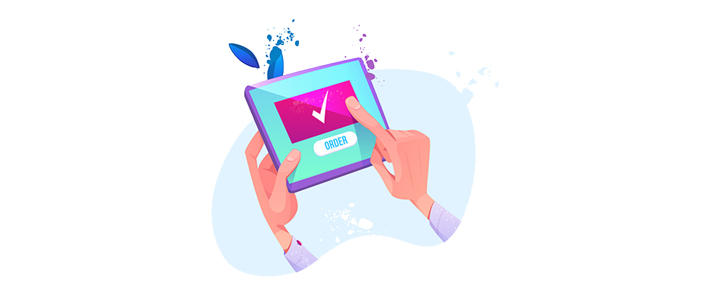

In today digital era where people can easily access most anything, anywhere and anytime, people are more convinient to doing research first about the information, comparation or maybe the price in their gadgets. With the huge number of online user in internet especially social media. Social media are the most effective way to grow your business. There are 7 reason why your business need social media.
Improve your brand awareness
In order using digital marketing strategy, your brand visibility in the internet are the most important thing. Because the way your business visible in the internet will make your customers find you easily. Social media can be the great support of your business in order make your potential customers find you easily. It will help your business online visitors increasing rapidly because of the wide range and variousity of the social media itself.
Cost effective
There are so many ways that you can do to reduce the cost in your business activity by using social media marketing, maybe like you can do the business without having an offline store or office. Using advetisement services, and eliminate trevel cost with doing your activity in online way.
Engage the right customers
With using the advertisement services of the social media platform, you dont need no worries about who gonna be see your ads. The systems they have will only showing your ads in certain characteristic like geography, time, or interest of each individual of the social media user.
Create a good relation with your customers
By using social media, your brand gonna be easily to find by your customers. Also with communication tools that provided by social media platform like chatroom and post you can easily to have interaction with your customers. The more you share information about your products, the more chances your customers have interest in your products. The way your servicing liked by your customers are also gonna increase the loyalty of your customers to your products.
Products developing
People are more convinient using social media in the way interacting than using website or go to the offline store. In social media, you can do interaction with your customers so you can getting know what is your brands or products weakness, and what your customers really need.
Brand authority
Not only for using in advertising your products. Social media of your brand or products are make your business looks sertiously and trusted. Having social media account for your business also make your brand protected so your brand not easily to be claimed by other person.
Easy and Simple
In strarting a new business there is many problem need to be solved, from how to get customers till the place location of your business. With using online strategy by doing your business, it will be really helpful to cut budget, time and energy.